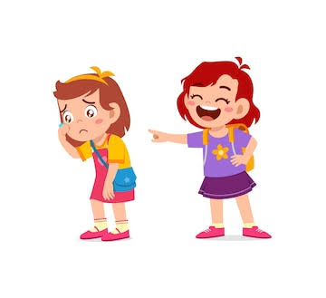
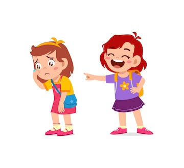

Este tipo de acoso consiste en expresar con palabras ya sea de manera directa o indirecta comentarios que busquen herir, humillar o dañar la reputación de la victima. En ello, se incluyen desde burlas, insultos, comentarios sexuales o inapropiados, provocaciones e incluso rumores sobre la victima.
Caracteristicas y consecuencias
CARACTERISTICAS :
-
Este normalmente será escalonario, iniciando con pequeños comentarios sutiles y chistes hirientes disfrazados en juego, donde el victimario tienta el terreno para gradualmente ir incrementando la agresividad y gravedad de las agresiones.
-
Agresiones verbales: Por mencionar algunas, estas pueden ser desde pequeños comentarios sobre la apariencia de la victima, su manera de vestir, invalidar opiniones hasta llegar a provocaciones, burlas, humillaciones publicas, revelar información intima de la victima o creación de rumores, etc. Todos claramente con el propósito de lastimar y denigrar a la victima.
-
Este se realiza de manera intencionada.
-
Sera repetitivo y no simplemente un hecho aislado.
-
Este podrá ocurrir tanto en lugares donde se encuentren la victima y el victimario como de manera indirecta.
-
Normalmente ocurrirá en situaciones donde haya una desigualdad de poder, ya sean en un aspecto físico donde hay una diferencia de fuerza, por estar en un puesto socialmente mas favorecido a el de la victima o incluso en un estado psicológico mejor al de la victima.
-
Normalmente este tipo de acoso es respaldado por un grupo de individuos que incluso se alientan a continuarlo y se cubren entre ellos mismos.• Normalmente este tipo de acoso es respaldado por un grupo de individuos que incluso se alientan mutuamente a continuarlo y se cubren entre ellos mismos.
CONSECUENCIAS
Claramente toda acción tiene una consecuencia y en este caso tampoco es la excepción. En el caso de la
victima estas pueden llegar a presentar:
El desarrolla de trastornos tales como lo son del sueño, alimentación o persecución, paranoia, ansiedad,
depresión, por mencionar algunos, a su vez también una autoestima y percepción negativa sobre si mismos,
autosabotaje, indefensión aprendida, entre otras. Puesto que tipo de acoso apela mucho a dañar la salud
emocional y psicológica de la victima .
Traumas relacionados al acoso vivido, ya sean desde reacciones exageradas ante situaciones comunes de la
vida cotidiana, reacciones fisiológicas presentes en situaciones de peligro [como temblores, ataques de
ansiedad o pánicos, agitación, parálisis, entre otras] al ver objetos o escuchar palabras que eran
constante cuando se sufría el acoso o que fueron un detonante antes de que ocurriera algo demasiado
significativo para la victima en el mismo acoso, de igual modo se aplicaría incluso al escuchar la voz
del o de los victimarios o voces similares a los mismos, entre otros.
A su vez también se van a presentar dolencias físicas como dolor cabeza, fatiga, cansancio excesivo,
tics, causadas por el excesivo estrés del acoso.
Este tipo de acoso en busca de ejercer mas control sobre la victima provocara que se pierdan o dañen
relaciones de cualquier índole, afectando la manera en que lleguen a llevar relaciones futuras. Siendo
todos estas consecuencias mencionadas que perduraran por mucho tiempo o incluso por toda la vida.
En el caso del victimario este podrá sufrir, una degradación de puesto o expulsión de la institución en
la que se encuentre estudiando o trabajando, penas de cárcel o internados que vararían dependiendo la
gravedad del acoso, sufrir multas económicas y prestar servicio comunitario.
Como identificarlo:
Las victimas de este tipo de acoso normalmente llegan a pasar desapercibidas puesto que al ser de manera verbal el acoso, la gente le quita merito o llama exagerada a estas, haciendo incluso dudar a las mismas victimas si es que en verdad están mal interpretando la situación, aquí unos tips para identificarlo:
COMO VICTIMA:
-
Has notado que te hacen chiste y comentarios hirientes, que buscan denigrarte o ponerte en una posición comprometedora.
-
Rumores sobre ti están empezando a circular ya sea a raíz desde que iniciaron esos comentarios y bromas hacia tu persona o después de una discusión con alguna persona.
-
Estas actitudes por parte de tus agresores son repetitivas y constantes.
-
Cuando has intentado confrontar a tus agresores estos simplemente evaden el tema, te hacen parecer o sentir que estas exagerando el asunto o te dicen que van a parar pero continúan con las mismas actitudes.
COMO TESTIGO:
-
Has empezado a escuchar varios rumores sobre una persona en especifico de un tiempo corto lapso de tiempo y que surgieron de manera repentina.
-
Notas y has escuchado comentarios repetidamente en el que se hacen chistes o burlas de una persona en particular estando presente o no esta, incluso te han contado rumores de la persona.
-
Notas cierto aislamiento en la victima a raíz de esos comentarios y rumores.
-
Notas la incomodidad de la victima cuando se hacen chistes y comentarios sobre ella cuando esta cerca de sus victimarios o que escuche de terceros.
-
La victima se nota en un estado de animo decaído, con estrés, irritabilidad o hasta angustia. A la vez que su apariencia física se nota mas descuida.
CAUSAS
En el apartado de causas por el cual una persona pueda sufrir bullying queremos dar a ver el enfoque de como este no es culpa de la victima si no, apelar al hecho de como el bullying viene de problemas que sufren los victimarios y que en busca de liberar todo esos sentimientos buscan un chivo expiatorio [la victima] incluso si esta no esta relacionada.
Los problemas mas frecuentes que desembocan estas actitudes por parte de los victimarios son:
-
Familias disfuncionales: Como es saber general el ambiente donde crecimos y nos criamos afectan mucho en el comportamiento que vayamos presentando a medidas que crecemos. En el caso de los victimarios es de notar que normalmente estos vienen de familias donde la comunicación es escaza a su vez de una donde se puedan presentar maltrato físico, psicológico, verbal e incluso social. Siendo los victimarios del acoso victimas de su entorno familiar donde en busca de tener idea de control en algo en su vida, liberar el estrés o simplemente por ideales erróneos inculcados es que se comenten las agresiones sus victimas.
-
Encajar en algún grupo social o agradarle a una persona de interés: Este aspecto encaja mas con los “victimarios secundarios” que realmente solo lo hacen ya sea por evitar ser ellos las victimas, estatus o para agradar al acosador principal.
-
Complejos e inmadures: Aquí se pueden abarcar complejos desde físicos a emocionales, el victimario al ver proyectado aquello que le desagrada, molesta o fastidia de si mismo en una inmadurez emocional, arremete contra la victima.
- Malicia: Simplemente cometen el acto del acoso por el placer de dañar, humillar y hacer sentir mal alguien.
Aunque pueden haber mas motivos puesto que cada ser humano es un caso completamente distinto estos se
podrían ejemplificar como los motivos mas comunes para cometer el acto del acoso físico.
Cabe aclarar que con esto no se busca justificar al victimario, mas si no, encontrar un motivo del por
que de este comportamiento.
Como prevenirlo:
Como victima realmente no hay mucho que se pueda hacer como para prevenir esta situación puesto que este al ser uno que se comete cuando hay una desigualdad de poder en la que la victima es la menos favorecida. En este caso solo quedarían en manos de las instituciones donde se hagan campañas en contra del acoso verbal sus consecuencias y sanciones para aquellos que lo cometan o sean cómplices, crear espacios y protocolos en los que las victimas puedan sentirse seguros y donde se incentive a denunciar cualquier acto de acoso. Como sociedad repudiar estas actitudes y hacer un llamado de atención cada que ocurran.
Posibles soluciones:
COMO VICTIMA:
-
Tratar de dialogar con el victimario en busca de detener el acoso.
-
Evitar el confrontamiento violento mas no ignorar el comportamiento recibido.
-
Poner al tanto de la situación a una persona de confianza.
-
Guardar pruebas de ser posible [grabaciones o audios donde se exponga el comportamiento del victimario].
-
Denunciar a las autoridades correspondientes.
Como victima debes tener en cuenta que probablemente debas aplicar la mayoría de las soluciones, pero ante todo recordar que no es tu culpa que una persona o grupo te busquen hacer y hagan daño.
COMO AYUDAR A LA VICTIMA:
-
Ser critico con la información que te digan o recibas.
-
Reportar y llamar la atención cuando se este presenten estas agresión.
-
Apoyar a la víctima ya sea escuchándola, aconsejándola o simplemente estando para esta.
-
Acompañar a la victima en el proceso de denuncia.
-
Guardar evidencias del acoso
-
En caso de que la victima no quiera denunciar el acoso, de manera anónima mostrar evidencias y platicar con alguna autoridad sobre el mismo acoso [ya sean los padres de la víctima, maestros o autoridades gubernamentales]
-
Como sociedad demostrar repudio ante actitudes de ese índole, exponiendo mediante palabras lo mal que hacen al cometerlas y como eso solo deja ver la baja calidad de persona que es el victimario.
-
A su vez crear programas en que se le de apoyo psicológico a las victimas y seguimiento en caso de que suceda alguna complicación.
 
